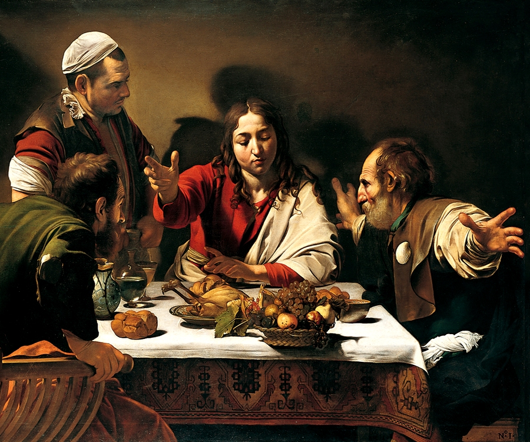
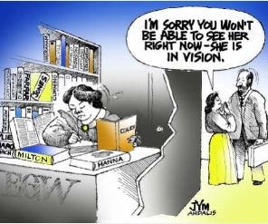
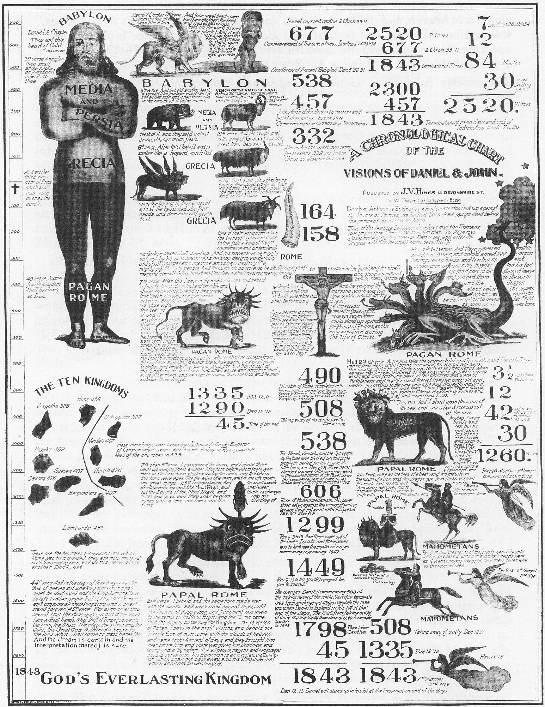
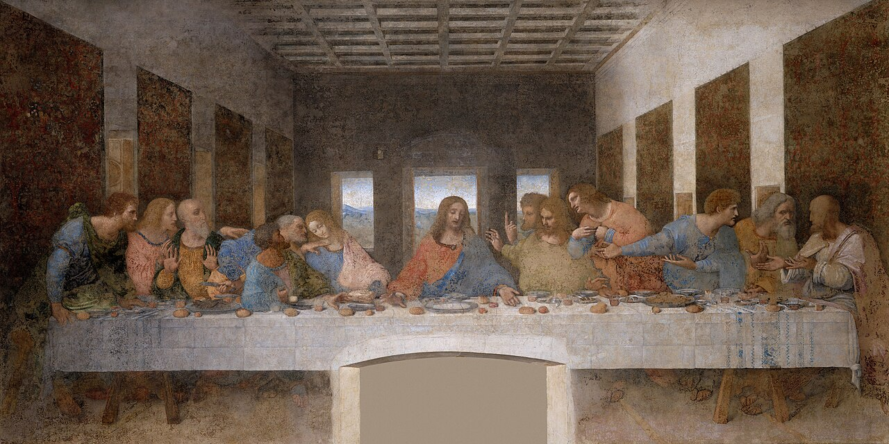

Topics
Subjects
Bible & EGW, plagiarism, failed visions, health message, 1844, investigative judgment, Sabbath, lawsuits, and more.
Browse subjects →Documentation · Discernment · Gospel freedom
An objective look at the teachings of Ellen G. White: inconsistencies, contradictions with Scripture, failed visions, and a call to honest repentance and change.
“And they shall turn away their ears from the truth, and shall be turned unto fables.” — 2 Timothy 4:4 KJV
Prophetic claims tested by the Word—not protected by tradition alone.
Browse subjects →
Plagiarism, visions, and historical claims with primary references.
Open the library →
For Adventists, former Adventists, and anyone seeking clarity in Christ.
Read testimonies →Why this archive exists
Truth or Fables provides resource material documenting inconsistencies within Adventist dogma, contradictions and additions to biblical teaching, failed visions, and non-scientific health-reform messages. It is also a call for honest repentance and change within Adventism.
“In these letters which I write, in the testimonies I bear, I am presenting to you that which the Lord has presented to me. I do not write one article in the paper expressing merely my own ideas. They are what God has opened before me in vision…”Ellen G. White · Testimonies for the Church, Vol. 5, p. 67 — claim tested against her sources
History in view
Context matters. These images place Ellen White and Adventism inside a longer story of prophecy, institution, and authority.

Millerite prophetic chart
Plagiarism
Ellen White’s books and testimonies contain extensive material taken from non-inspired authors. She and her secretaries drew on a library of about 1,200 books—often without credit—while leading followers to believe the light shone from the throne of God.
Major sources include John Harris, Frederic Farrar, George Jones, Alfred Edersheim, J. H. Ingraham, Francis Wayland, and John Cumming. See Walter Rea’s The White Lie and the Desire of Ages / Veltman research.
Start here

Bible & EGW, plagiarism, failed visions, health message, 1844, investigative judgment, Sabbath, lawsuits, and more.
Browse subjects →
We don’t sell books—we recommend carefully chosen titles for serious study of Adventism and the gospel.
See book list →Readers share how documentation and Scripture opened a path out of fear and into freedom in Christ.
Read stories →New & important
Deep-dive PDFs from the Truth or Fables archive.
Ellen White’s Chicago Buildings Vision—among her most spectacular prophetic failures.
Bacchiocchi, MacCarty, and DuPreez—and the havoc around Sabbath claims and White.
Veltman research and literary sources behind one of White’s most celebrated works.
Subject map
Failed visions, contradictions, Adventism and Christianity.
Health message, Shut Door, sanctuary, 2300 days, investigative judgment.
Integrity questions, Sabbath/Sunday, other doctrines, corruption.
Stay rooted in the gospel
Founded by Robert K. Sanders (1997–2012). Life Assurance Ministries assumed ownership in 2012. The aim is not mere controversy—it is freedom found in the finished work of Jesus.
Next step
Open a subject, read a testimony, or write someone who has walked this road.